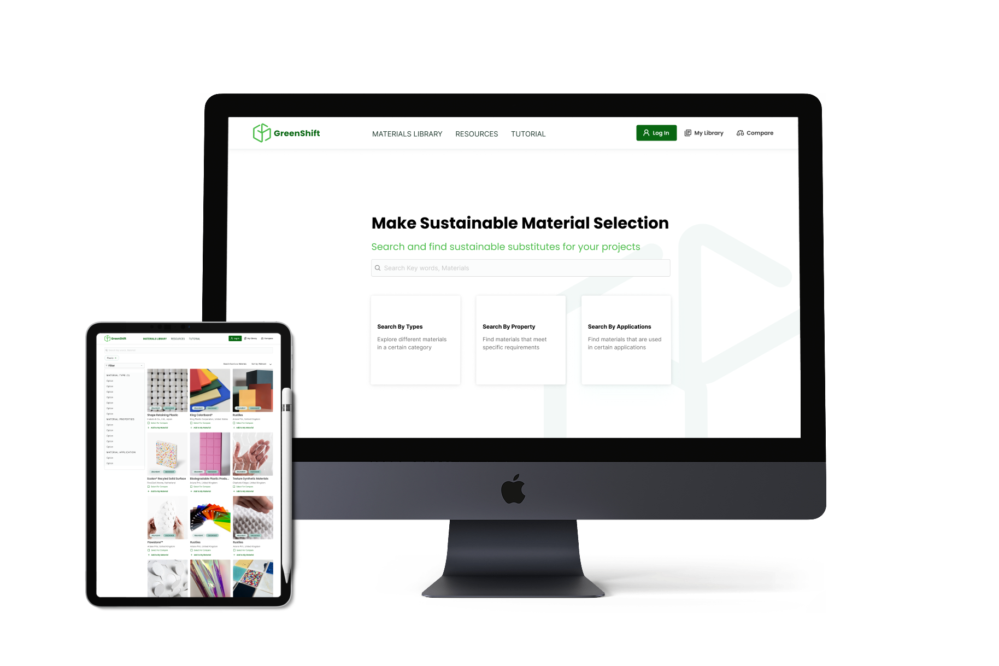
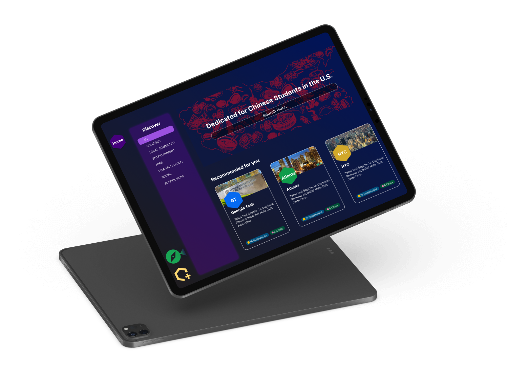
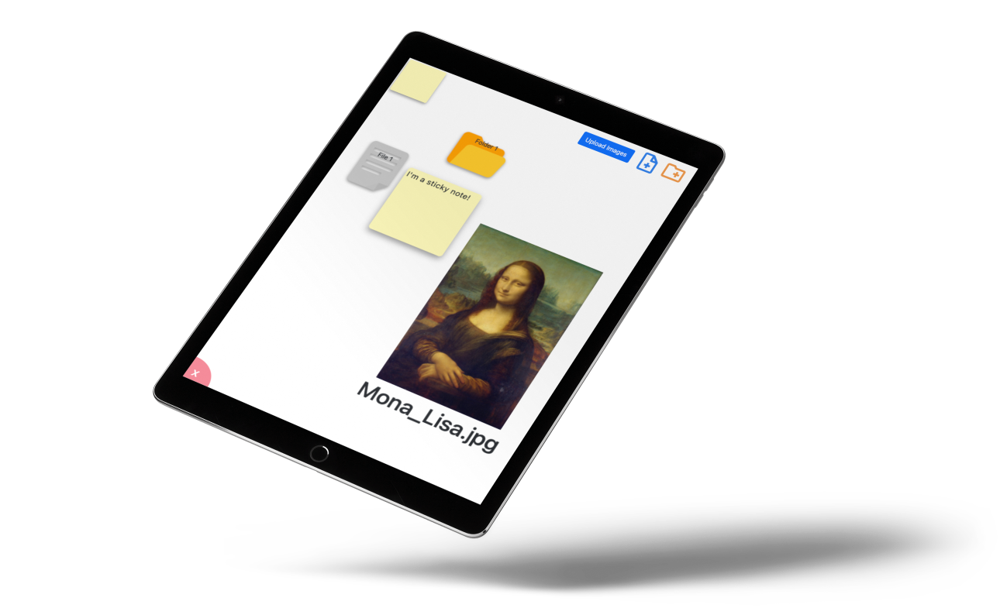
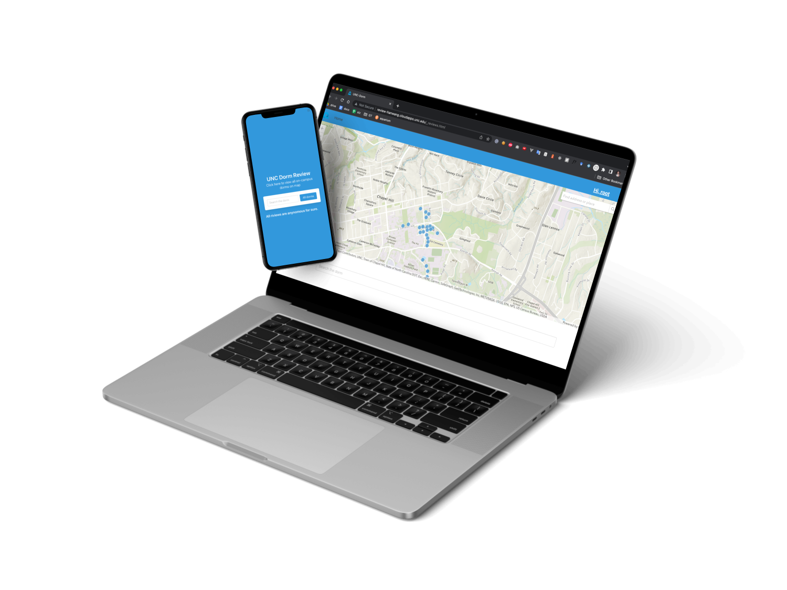

Jenny Wang
A passionate UX engineer
Résumé
Learn more
UX Designer at Symbotic
MS-HCI student @GeorgiaTech
UNC-CH Alumna
The key to good design is about
making something pretty 💅🏻
view the world with new lenses 🤩

Learn more